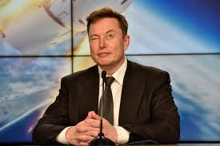
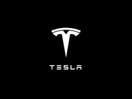

 Elon Reeve Musk (Pretoria, 28 juni 1971) is een, als Zuid-Afrikaan geboren, Canadees-Amerikaans ondernemer. Hij is de oprichter van SpaceX en medebedenker en -oprichter van Zip2 en CEO en oprichter van Tesla,[2] waar hij zich een jaar na de oprichting bij voegde. Hij werkte mee aan het succes van PayPal. Hij is algemeen directeur (CEO) en chief designer (CDO) van SpaceX, algemeen directeur en productarchitect van Tesla en was tot de overname door Tesla voorzitter van SolarCity. Musk haalde de internationale pers met de ideeën voor een hyperloop en een VTOL supersonisch elektrisch vliegtuig. Volgens de Bloomberg Billionaires Index was Musk in 2020 met een bezit ter waarde van 128 miljard dollar de een na rijkste persoon op aarde. Zijn geschatte vermogen groeide dat jaar met 100 miljard waarmee hij van de 35e naar de tweede plaats op de lijst steeg.
Tesla is in 2003 opgericht door een groep ingenieurs die wilden bewijzen dat er geen concessies hoeven te worden gedaan om elektrisch te rijden – dat elektrische voertuigen zelfs beter, sneller en leuker kunnen zijn dan benzineauto's. Tegenwoordig bouwt Tesla niet alleen volledig elektrische voertuigen, maar ook onbeperkt schaalbare producten voor de opwekking en opslag van schone energie. Tesla gelooft dat hoe sneller de wereld overstapt van fossiele brandstoffen naar een toekomst zonder CO2-uitstoot, hoe beter. In 2008 werd de Roadster gepresenteerd, en daarmee ook Tesla's geavanceerde batterijtechnologie en elektrische aandrijflijn. Tesla bouwde hierop voort en ontwikkelde 's werelds eerste hoogwaardige volledig elektrische sedan, de Model S, die in elke categorie de beste auto in zijn klasse is geworden. Met zijn combinatie van veiligheid, performance en efficiëntie heeft de Model S het beeld van auto's van de 21e eeuw volledig op zijn kop gezet. De Model S heeft het grootste bereik van alle elektrische voertuigen, ontvangt draadloze software-updates die de auto steeds beter maken en accelereert van 0 naar 60 mijl/u in een recordtijd van 2,28 seconden, zoals gemeten door Motor Trend. In 2015 breidde Tesla het assortiment uit met de Model X, de veiligste, snelste en meest capabele SUV in de geschiedenis, met een veiligheidsscore van 5 sterren in elke categorie van de National Highway Traffic Safety Administration. En als laatste stap van het "geheime meesterplan" van CEO Elon Musk introduceerde Tesla in 2016 de Model 3, een laaggeprijsd elektrisch volumemodel, dat in 2017 in productie ging. Kort daarna onthulde Tesla de veiligste en comfortabelste truck ooit, de Tesla Semi, die zo is ontworpen, dat eigenaren ten minste $ 200.000 alleen al aan brandstofkosten besparen over een miljoen mijlen. In 2019 onthulde Tesla de Model Y, een middelgrote SUV met maximaal zeven zitplaatsen, en de Cybertruck, die veelzijdiger is dan een conventionele truck en sneller is dan een sportwagen.